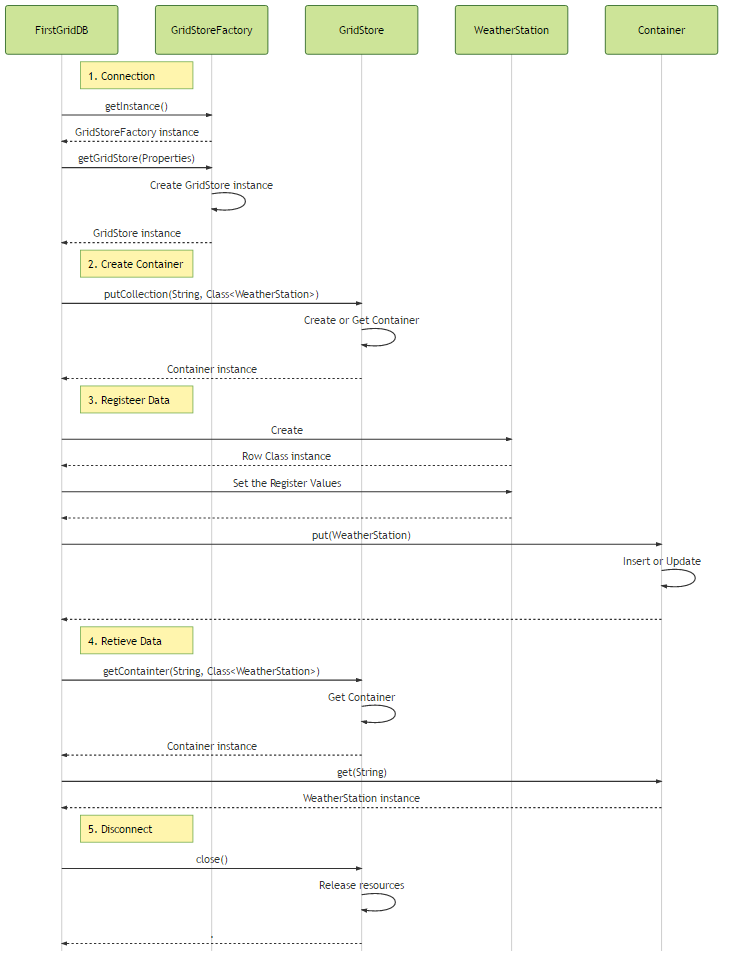

Table of Contents
5.1.2 GridDB Basics¶
Overview¶
We will introduce a series of basic operations in this chapter to help better understand the overall of GridDB API. It should be noted that not all of specification information about specific GridDB API’s will be introduced. Please refer to the individual chapter for further details. In addition, this chapter uses the data described in the Introduction.
Application Workflow¶
The basic workflow of a GridDB application is as follows:
- Connect
- Open a connection from the client program to the GridDB server.
- Create a container
- Create a container to store the data in GridDB/
- Register data
- Register the data in the container.
- Get the data
- Get the data from the container.
- Close
- Disconnect the client program from the server to free up resources.
The flow of the process is shown below.
Figure 1 GridDB basic operation sequence
FirstGridDB in the figure refers to the client program. For more information on classes and each processing will be described below.
Client program¶
Let’s take a look at the basic workflow of a GridDB application. Since the description of the individual parts in the process will be described later, we focus on the overall workflow of the program.
List.1 client program (FirstGridDB.java)
package sample;
import java.util.Properties;
import com.toshiba.mwcloud.gs.Collection; import com.toshiba.mwcloud.gs.GSException; import com.toshiba.mwcloud.gs.GridStore; import com.toshiba.mwcloud.gs.GridStoreFactory;
import sample.row.WeatherStation;
public class FirstGridDB {
public static void main(String\[\] args) throws GSException {
// Set the Connection parameter for GridDB
Properties props = new Properties();
props.setProperty("host", "127.0.0.1");
props.setProperty("port", "10001");
props.setProperty("clusterName", "GSCLUSTER");
props.setProperty("database", "public");
props.setProperty("user", "admin");
props.setProperty("password", "admin");
GridStore store = GridStoreFactory.getInstance().getGridStore(props);
// Create Collection
Collection weatherStationCol =
store.putCollection("weather_station", WeatherStation.class);
// Set the value to Row data
WeatherStation weatherStation1 = new WeatherStation();
weatherStation1.id = "1";
weatherStation1.name = "WeatherStation 01";
weatherStation1.latitude = 35.68944;
weatherStation1.longitude = 139.69167;
weatherStation1.hasCamera = true;
WeatherStation weatherStation2 = new WeatherStation();
weatherStation2.id = "2";
weatherStation2.name = "WeatherStation 02";
weatherStation2.latitude = 35.02139;
weatherStation2.longitude = 135.75556;
weatherStation2.hasCamera = false;
// Register Collection
weatherStationCol.put(weatherStation1);
weatherStationCol.put(weatherStation2);
// Retrieve Collection
System.out.println("get by key");
System.out.println("ID\\tName\\t\\t\\tLongitude\\tLatitude\\tCamera");
weatherStationCol = store.getCollection("weather_station", WeatherStation.class);
for (int i = 0; i < 2; i++) {
WeatherStation weatherStation = weatherStationCol.get(String.valueOf(i + 1));
System.out.println(String.format("%-3s\\t%-20s\\t%-10s\\t%-10s\\t%-5s", weatherStation.id,
weatherStation.name, weatherStation.latitude, weatherStation.longitude,
weatherStation.hasCamera));
}
// Close Connection
store.close();
}
}
1. Connection¶
Let’s connect to the GridDB.
List.2 connection process (FirstGridDB.java)
// Set the Connection parameter for GridDB Properties props = new Properties (); props.setProperty(“host”, “127.0.0.1”); props.setProperty(“port”, “10001”); props.setProperty(“clusterName”, “GSCLUSTER”); props.setProperty(“database”, “public”); props.setProperty(“user”, “admin”); props.setProperty(“password”, “admin”); GridStore store = GridStoreFactory.getInstance().getGridStore(props);
- L.16-22: Set the connection poperties.
- L.23: From a GridStoreFactory instance, get a store object that will be later used to specify the connection information.
For more information and further details about connecting to GridDB, please see the [Connection chapter] (../sample_app_prepare_connection).
2. Creating a container¶
Containers can be made easily by defining the data as a class. It is possible to specify the data type dynamically in the program as well. For more information is available in the Container Create/Delete and also the meta-information chapters.
List.3 measuring instrument class (WeatherStation.java)
package sample.row;
import com.toshiba.mwcloud.gs.RowKey;
/** * Class that represents the definition of the schema. */ public class WeatherStation { /** * ID of WeatherStation */ @RowKey public String id;
/\*\*
\* Name of WeatherStation
*/
public String name;
/\*\*
\* Installation Latitude
*/
public double latitude;
/\*\*
\* Installation Longitude
*/
public double longitude;
/\*\*
\* Camera exists or not
*/
public boolean hasCamera;
}
- L.12-13: The
@RowKeykeyword specifies which variable becomes the key of the container.
List.4 container creation process (FirstGridDB.java)
// Create Collection Collection <String, WeatherStation> weatherStationCol = store.putCollection(“weather_station”, WeatherStation.class);
- L.26-27: Creates the container with name and collection class type.
3. Register the data¶
Ready access to GridDB in the above process is now ready. Let’s try to register the data in GridDB.
List.5 data registration processing (FirstGridDB.java)
// Set the value to Row data WeatherStation weatherStation1 = new WeatherStation(); weatherStation1.id = “1”; weatherStation1.name = “WeatherStation 01”; weatherStation1.latitude = 35.68944; weatherStation1.longitude = 139.69167; weatherStation1.hasCamera = true;
WeatherStation weatherStation2 = new WeatherStation(); weatherStation2.id = “2”; weatherStation2.name = “WeatherStation 02”; weatherStation2.latitude = 35.02139; weatherStation2.longitude = 135.75556; weatherStation2.hasCamera = false;
// Register Collection weatherStationCol.put(weatherStation1); weatherStationCol.put(weatherStation2);
- L.30-42: Set the values of the data to be registered.
- L.45-46: Pack data and register it in the container.
For more information on data registration, please see that chapter. There is also further information about TimeSeries data registration in that chapter.
4. Data Retrieval¶
Now the just registered data can be retrieved from the GridDB server.
List.6 data acquisition process (FirstGridDB.java)
// Retrieve Collection System.out.println(“get by key”); System.out.println(“ID\tName\t\t\tLongitude\tLatitude\tCamera”); weatherStationCol = store.getCollection(“weather_station”, WeatherStation.class);
for (int i = 0; i < 2; i++) { WeatherStation weatherStation = weatherStationCol.get(String.valueOf(i + 1)); System.out.println(String.format(“%-3s\t%-20s\t%-10s\t%-10s\t%-5s”, weatherStation.id, weatherStation.name, weatherStation.latitude, weatherStation.longitude, weatherStation.hasCamera)); }
- L.51: First get the container by specifying the container name and class.
- L.54: Then get row data by specifying the key.
Here is the output:
List.7 data acquisition result
get by key ID Name Longitude Latitude Camera 1 WeatherStation 01 35.68944 139.69167 true 2 WeatherStation 02 35.02139 135.75556 false
Further details are explained in the Data retrieval chapter. Also refer to TimeSeries data retrieval.
5. Closing the Connection¶
Finally, cut the client program and GridDB.
List.8 data acquisition process (FirstGridDB.java)
// Close Connection store.close ();
- L.61: Release the used resources on both the client and the server.
This chapter provided a brief overview of the GridDB workflow and should give an understanding of GridDB’s basic functions. Image of the program to access the GridDB is I think I was able to understand. There are many more functions in the GridDB API that are not described here. Please refer to each specific for more details.
Source code¶
Complete source code used in this chapter can be downloaded from the following.
Download: griddb-first.zip